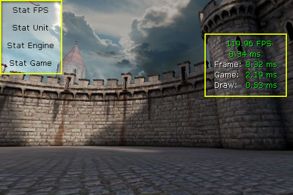

UDN
Search public documentation:
MobileProfilingHomeCH
English Translation
日本語訳
한국어
Interested in the Unreal Engine?
Visit the Unreal Technology site.
Looking for jobs and company info?
Check out the Epic games site.
Questions about support via UDN?
Contact the UDN Staff
日本語訳
한국어
Interested in the Unreal Engine?
Visit the Unreal Technology site.
Looking for jobs and company info?
Check out the Epic games site.
Questions about support via UDN?
Contact the UDN Staff
移动设备分析
概述
STAT命令
 要得到所有 STAT 命令的完整列表并了解所有统计数据的描述，请参阅统计数据命令描述页面。
这些命令在移动设备上的运行情况与在 PC 上分析游戏时相同，除了一些例外情况。
要得到所有 STAT 命令的完整列表并了解所有统计数据的描述，请参阅统计数据命令描述页面。
这些命令在移动设备上的运行情况与在 PC 上分析游戏时相同，除了一些例外情况。
执行命令
在移动游戏上没有控制台，所以没有办法任意执行通过键盘输入的命令。一些执行命令的方法是：- Kismet - 可以在 Kismet 中创建序列使用控制台命令操作执行 STAT 命令。可以在关卡开始的时候或通过指定事件触发这个序列。

- UnrealScript - 可以使用 UnrealScript 通过在
PlayerController上调用ConsoleCommand()函数并将要执行的命令传递给它来执行 STAT 命令。它的灵活性更强，但是显然需要更改代码并进行重新编译才能调用不同的命令。 - Menu Buttons - 可以使用移动菜单系统创建一个调试菜单，其中菜单中的每个按钮都可以使用上述相同的方法通过 UnrealScript 执行不同的命令。

有限的屏幕空间
记住 STAT 命令可以直接在屏幕上显示统计数据信息。这意味着可能只可以看到任何一个命令中的一部分统计数据。它还可以使统计数据的多个群组无法同时可见。当然，通常您可以在移动预览器中运行游戏时使用这些命令，这个预览器将允许您看到全部统计数据。只注意那些在 Mobile Previewer（移动设备预览器）中执行可能会与在实际移动设备上执行有所不同的地方。游戏线程分析

获取分析文件
在移动设备上运行的时候，会自动在设备上创建分析文件。为了使用这些文件，需要从设备中取回它们。下面将会详细说明这个过程。 如何通过虚幻 iPhone 打包机工具从 iPhone 中获取文件：- 打开
/binaries/iPhone/中的 IPP.exe - 在配置工具选项卡中，选择该设备并点击 Backup Documents（备份文档）
- 浏览至您在设备上使用的 IPA。例如，如果您已经烘焙了 Release MobileGame，那么 IPA 为：
\Binaries\IPhone\Release-iphoneos\MobileGam\MobileGame.ipa。 - 文件将会被保存到
\UnrealEngine3\MobileGame\iOS_Backups\ - 然后您可以通过相关的应用程序打开任意分析文件，例如，GameplayProfiler.exe。
Instruments（性能调试工具）
 要监测这些进程以及与您的游戏相关联的内存使用情况：
要监测这些进程以及与您的游戏相关联的内存使用情况：
- 从 LIbrary 的 iPhone 项中选择 Memory Monitor 和 Activity Monitor。
- 选择 iOS 设备运行游戏以及 Record（录制） 按钮下拉菜单中的 All Processes（全部进程） 。
- 点击 Record（录制） 按钮开始分析。
内存分析器
常见性能问题
- 在移动设备上使用 gamma 校正可能会对性能产生显著影响。它只适用于在功能强大的未来移动设备（iPad 2 或者更好的移动设备）上使用。如果您已经在移动设备上为您的贴图启用了 gamma 校正，同时发现了性能问题，那么可能需要禁用它并通过内容设法解决缺乏 gamma 校正的问题。请参阅 Gamma 了解有关设计未经 gamma 校正过的移动设备的内容的信息。